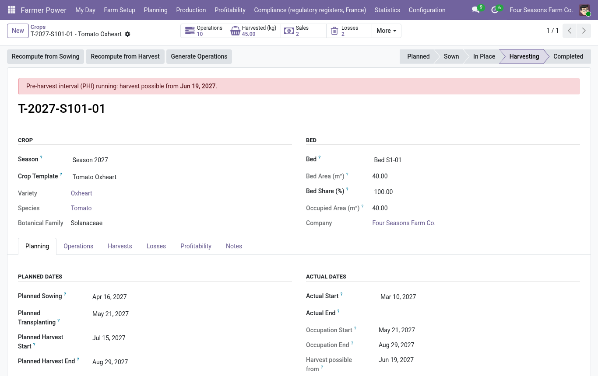
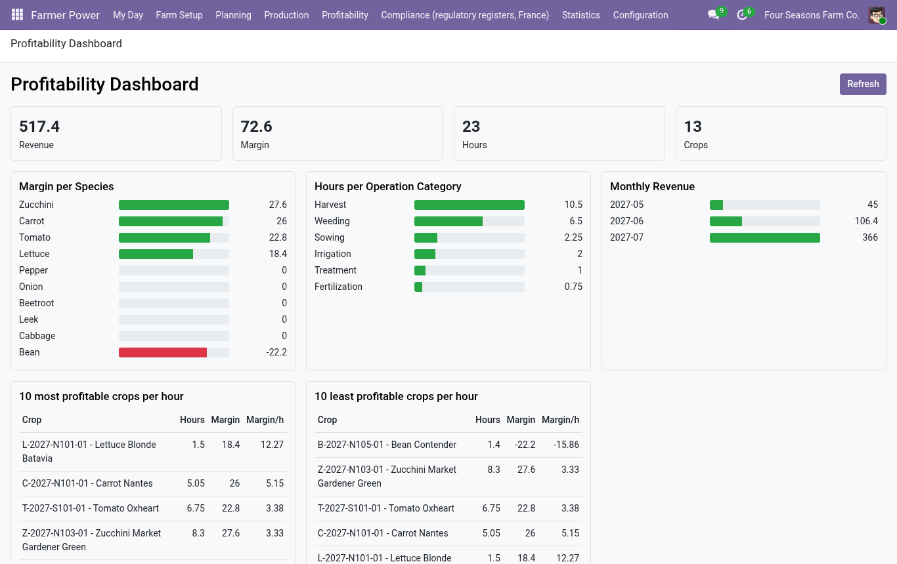
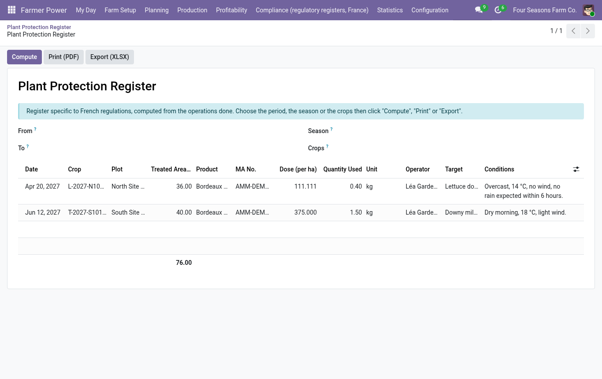

Farmer Power
Market gardening management for Odoo
Market gardening on Odoo: plan the crops, record the work, and know what each crop earns
per hour of labor and per m², from the same data as your stock, sales and payroll.
Why Farmer Power?
Dedicated farming tools plan the season well, but stay apart from the books. Farmer Power plans the crops
natively on top of Inventory, Sales, Accounting and Employees, so the profitability of every crop is
computed from real sales and real costs, without double entry.
Main features
Farm structure- Farm, site, block (irrigation sector), bed, with areas
- QR code label per bed, opening the bed on a phone
- Multi-company ready
|
Catalog and planning- Species (botanical families), varieties linked to products, crop templates
- Annual crop plan with backward planning from the target harvest date
- Batch planning wizard, overlap and rotation checks, seed needs
- Gantt view of the bed occupancy (no Enterprise dependency)
|
Work and labor- Planned operations generated from the template steps
- "My Day" mobile view, timer, time per employee and cost
- Operations on a crop, beds or a whole block, split by occupied area
|
Stock and traceability- Inputs consumed from stock, harvests entering stock with a crop lot
- Losses and scraps, loss rate
- From the seed lot to the customer lot, in both directions
|
Profitability- Revenue per crop by delivery lot or pro rata of the monthly harvests
- Margin per crop, bed, species, hour and m², expected versus actual
- Dashboard and pivot / graph reports
|
Regulatory registers (France)- Plant protection register (PDF and XLSX), fertilization register, organic certification export
- Pre-harvest interval check with a manager waiver
- Specific to French regulations: can be switched off in the settings for other markets
|
Starter catalogs by language- Local varieties and common inputs loaded at installation for French, Spanish, German, Dutch, Italian and Brazilian Portuguese
- Reloadable at any time from Configuration > Starter Catalog, without duplicates
|
Dashboards- Occupation, crops, work and losses, revenue and margin, year-over-year comparison
- Native views, no external resource loaded
|
Screenshots

Crop plan: expected and actual occupation of every bed, colored by botanical family.

Crop form: work hours, labor and input costs, revenue and margin of one crop.

Profitability dashboard: margin per species, hours per operation category, monthly revenue.

My Day: today's and overdue operations, with Start and Complete buttons.

Seed needs per variety, computed from the planned crops.

Plant protection register (France), printable and exportable.
Free optional bridges
Two free companion modules are installed automatically when the matching Odoo app is present:
| Module | Installed with | What it adds |
|---|
farmer_power_purchase | Purchase | Creates draft requests for quotation for the seeds and plants of a season, one per supplier. |
farmer_power_pos | Point of Sale | Includes market sales rung up in the Point of Sale in the revenue and profitability of the crops. |
Compatibility and languages
- Odoo 19, Community and Enterprise. No dependency on Enterprise-only modules.
- Depends on Inventory, Sales, Accounting, Employees and Discuss.
- No external resource is loaded: everything works offline, with native Odoo views and OWL.
- Source language: English. Translations: French, Spanish, German, Dutch, Italian, Brazilian Portuguese (machine translations, to be reviewed by native speakers).
Roles
- Worker: sees the crop plan, records and times their operations, harvests and losses. No access to costs.
- Crop Manager: manages the catalog, templates, seasons, crops and all operations.
- Manager: profitability, configuration and pre-harvest interval waivers.
Support: a publisher who listens
EfficiencyRecord the work once, where it happens: the "My Day" view, the timer and the batch planning wizard replace paper notes and spreadsheet copies. Costs, harvests and sales come from your Inventory, Employees and Accounting data, with no double entry. |
Time savedThe crop plan generates the planned operations and the seed needs; registers (phytosanitary, fertilization, organic export) are produced from what you already entered. |
We listen to your feedbackFarmers shape the roadmap. Every request is read and answered; the most useful ones go into the next versions, and we say so in the release notes. |
How to reach us
- Contact: odoo@biologeek.info
- Website and support page: https://odoo.biologeek.info
- When you write, mention your Odoo version, the module version and, for a bug, the steps to reproduce it (a screenshot helps).
- Bugs are fixed first; feature requests are discussed and prioritised with the users who need them.